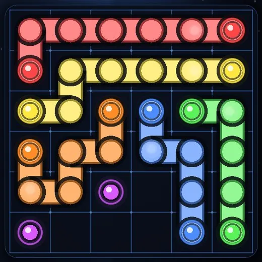
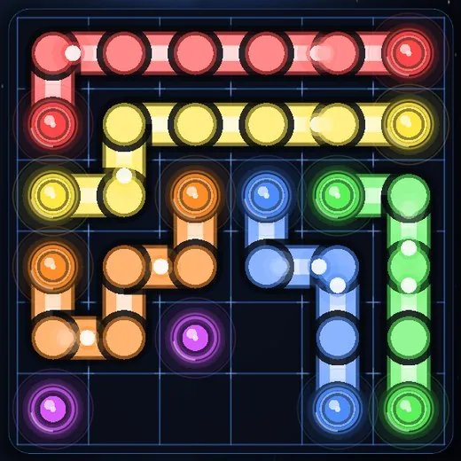
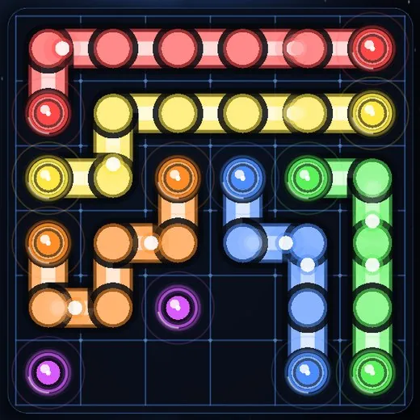
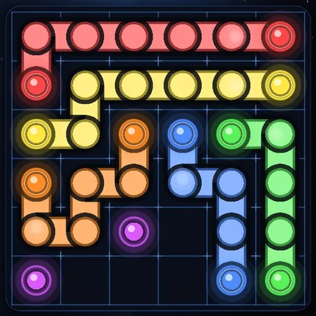

📅 28 October 2026 · ⏱ 5 min read · ✍️ Grounded Studio
Themes change the world around the puzzle. FX packs change the puzzle board itself: the dots, the paths and the grid under your finger.
There are two of them, Neon Circuit and Hyper Grid. You can run either one on its own or stack them both. Here's what each one does, and a few things we learned making them.


Neon Circuit was the first pack, and it's built around one idea: the circuit is alive. When you connect two dots, you're not just drawing a line. You're closing a circuit, and power starts to flow.

🛠 From the dev journal. The first version of the data packets was too much. They zipped along every path at full speed and the board looked like a busy motherboard: great for one level, tiring after ten. We slowed them right down, capped them at two per path and gave them a gentle ease in and out. Now they drift. You notice them when you look, and forget them when you're thinking.
Where Neon Circuit is about the paths, Hyper Grid is about the board under them.

Hyper Grid is the more "tactile" of the two. The sparks react to what you're doing right now, so drawing a path feels like you're charging it up.
The two packs were designed to layer. Neon Circuit handles the paths and Hyper Grid handles the grid and the dots, so with both on nothing fights for attention. That's the screenshot at the top of this post: pulsing coils, drifting data packets, glowing solder points and sparks while you draw.
They also work with every theme, in every mode. Try both packs on top of Cosmic Nebula or Neon if you want the full light show.
Once you own a pack, its card in the 🛍 SHOP shows an on/off switch instead of a price. Turn Neon Circuit off for a quiet session, turn it back on for the Daily. The change is instant, even with a level open in the background. You never have to "use up" anything.
No subscriptions and nothing that expires. Every purchase stays tied to your Google account, so a new phone is a tap on Restore purchases away.
Like the themes, FX packs are only about the look. They never show you a solution, never add hints, and every puzzle is solvable in exactly the same way with or without them. If you never buy one, you're missing a light show, not a part of the game.
Curious about the backgrounds as well? Read 13 themes, and how to unlock every one.
Compare all four looks on the Themes & FX page, or install Circuit Trace and open the Shop from the main menu.